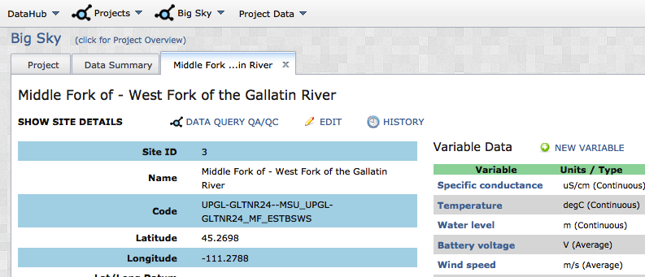
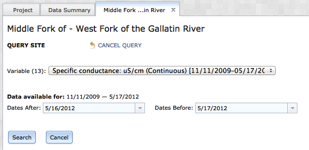
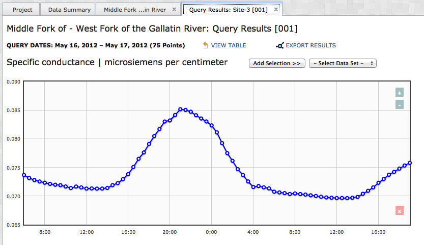

To begin qeurying data, navigate to the Project_Show page of the project you are interested. Remember, you will only be able to query data from projects where you have the appropriate access permissions. Open the Project_Show page by selecting the project name from the Projects dropdown menu.

In the Project_Show page with the Data_Summary tab open, select the site you are interested in. The (Site_Name) tab will open. Select the option: "DATA QUERY QA/QC" from the options at the top of the page.

You will be directed to a new tab where you will define your query. You need to select a variable from the dropdown list, and a date range you are interested in.

When you are finished, click "Search". A new tab will open with your query results. You can toggle back and forth between the graph view and a table view of the data. If you would like to export this data for analysis, simply click the "Export Results" option from the top of the tab and select a directory to save the .csv file to. This file will contain all of the data values returned by your query, as well as the complete set of metadata that is stored with them.

The interactive graphing widget allows you to select individual data value, which are then highlighted in the table view of the data. The (+/-) buttons on the top right of the graph allow users to modify the zoom/extent of the graph.
Created with the Personal Edition of HelpNDoc: Free CHM Help documentation generator